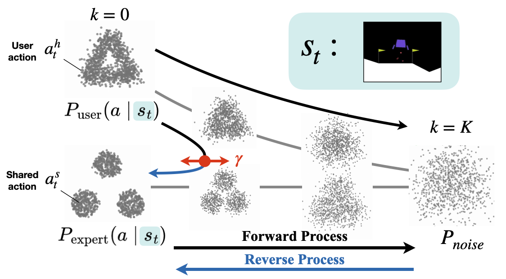

To the Noise and Back:Diffusion for Shared Autonomy
Takuma Yoneda1, Luzhe Sun2, Ge Yang3, 4, Bradly C. Stadie5, Matthew R. Walter1
1TTI-Chicago, 2University of Chicago, 3MIT CSAIL, 4IAIFI, 5Northwestern University
CODE |PAPER
Overview
We present a new approach to learn an assistive policy based on diffusion models. With the partial forward-and-reverse diffusion process we introduce, the diffusion model pretrained on expert demonstrations can improve user input (avoiding failures, enabling smoother control) while preserving their intention.
What is shared autonomy?
Shared autonomy considers a setting where a user and an assistive agent work together to control a robotic system.
Shared autonomy is particularly beneficial in settings in which the task may be difficult or even impossible for the user to perform on their own (e.g., flying a high-agility aircraft). The goal of the assistive agent is to improve the user's ability to perform the task (e.g., by avoiding crashes), and the challenge is to do so while simultaneously preserving their intent (e.g., landing at the appropriate destination).
Motivation
Once trained, diffusion models can pull a noisy sample back to the training data manifold.
More accurately, diffusion models learn a gradient field, where a vector at each location points toward higher likelihood region in the training data distribution.
In the same way, when a diffusion model is trained on expert demonstrations (state-conditioned actions),
it should be able to pull a noisy action closer to the expert action manifold.
Now, let us consider shared autonomy setting.
A user produces a suboptimal action \(a^h_t\), and our assistive agent needs to correct it.
If we pretend that the action \(a^h_t\) is the noisy action,
the pretrained diffusion model will correct the action to make it look more like an expert action.
This achieves assisting the user by correcting its action.
Diffusion model trained on expert demonstrations should be able to serve as an assistive agent!
Method
A standard diffusion model runs the reverse diffusion (i.e., denoising) process from Gaussian distribution to generate a sample.
Sampling from Gaussian distribution is equivalent to applying the forward diffusion (i.e., noising) process to an arbitrary sample.
Thus, this standard generation procedure can be seen as applying the forward and then reverse diffusion process to a sample.
We consider applying the forward diffusion process on the user action partially (quantified via the forward diffusion ratio \(\gamma\)),
followed by the reverse diffusion process for the same number of steps.
The property of generated action changes according to \(\gamma\):
- When \(\gamma\) is small, the resulting action is close to the user action (i.e., high fidelity to user's intention)
- When \(\gamma\) is large, the resulting action has high likelihood in expert distribution (i.e., high conformity to expert)
With a diffusion model pretrained on expert demonstrations (state-conditioned actions),
we apply this partial diffusion procedure on the user action \(a^h_t\) to generate a corrected shared action \(a^s_t\).

Experiments
Once trained, diffusion models can pull a noisy sample back to the training data manifold. More accurately, diffusion models learn a gradient field, where a vector at each location points toward higher likelihood region in the training data distribution.
In the same way, when a diffusion model is trained on expert demonstrations (state-conditioned actions), it should be able to pull a noisy action closer to the expert action manifold.
Now, let us consider shared autonomy setting. A user produces a suboptimal action \(a^h_t\), and our assistive agent needs to correct it. If we pretend that the action \(a^h_t\) is the noisy action, the pretrained diffusion model will correct the action to make it look more like an expert action.
This achieves assisting the user by correcting its action. Diffusion model trained on expert demonstrations should be able to serve as an assistive agent!
A standard diffusion model runs the reverse diffusion (i.e., denoising) process from Gaussian distribution to generate a sample. Sampling from Gaussian distribution is equivalent to applying the forward diffusion (i.e., noising) process to an arbitrary sample. Thus, this standard generation procedure can be seen as applying the forward and then reverse diffusion process to a sample.
We consider applying the forward diffusion process on the user action partially (quantified via the forward diffusion ratio \(\gamma\)), followed by the reverse diffusion process for the same number of steps. The property of generated action changes according to \(\gamma\):
- When \(\gamma\) is small, the resulting action is close to the user action (i.e., high fidelity to user's intention)
- When \(\gamma\) is large, the resulting action has high likelihood in expert distribution (i.e., high conformity to expert)
We evaluate our algorithm in four shared autonomy environments including a (a) 2D Control task in which an agent navigates to one of two different goals, (b) Lunar Lander that tasks a drone with landing at a designated location, (c) a Lunar Reacher variant in which the objective is to reach a designated region in the environment, and (d) Block Pushing, in which the objective is to use a robot arm to push an object into one of two different goal regions.
The following plots show success rate vs forward diffusion ratio \(\gamma\) for noisy expert. The dashed blue lines denote the success rates of the original expert, while the dotted blue lines are the success rate of our model with full diffusion (i.e., \(\gamma = 1.0\) ).
Following is the statistics information for three environments about different pilots with and without assistance,
where we show the results for our chosen value \(\gamma = 0.4\) for Lunar Lander and Lunar Reacher and \(\gamma = 0.2\)
for Block Pushing.
Each entry corresponds to \(10\) episodes across \(30\) random seeds.

BibTex
@inproceedings{DBLP:conf/rss/YonedaDSA23,
author = {Takuma Yoneda and
Luzhe Sun and
Ge Yang and
Bradly C. Stadie and
Matthew R. Walter},
title = {To the Noise and Back: Diffusion for Shared Autonomy},
booktitle = {Robotics: Science and Systems XIX, Daegu, Republic of Korea, July
10-14, 2023},
year = {2023}
}